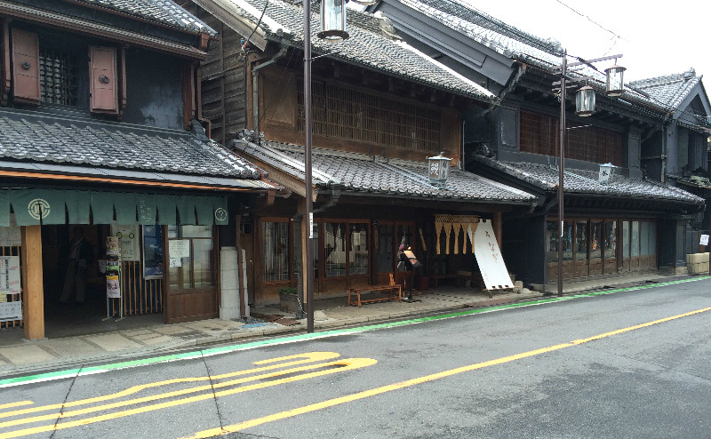
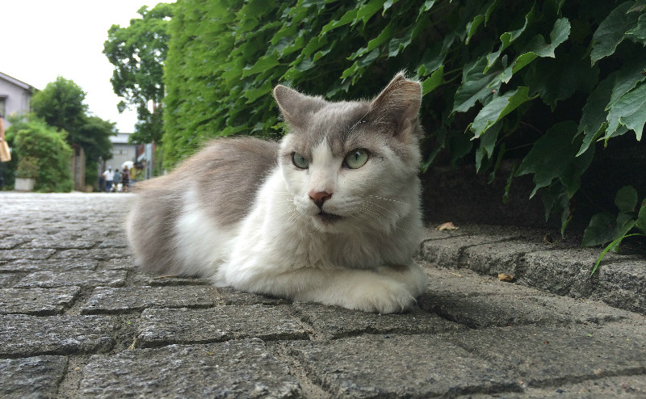

川越
穿越江戶及昭和時代

慢遊路線：冰川神社>藏造老街>大正浪漫通>蓮馨寺
慢遊距離：2Km
慢遊時間：1day
川越是個充滿江戶風情的歷史小鎮，以藏造老街最為熱鬧知名。這次將朋友極力推薦選擇冰川神社當第一站，果然很值得一遊。
到這裡不得不稱讚日本的寺廟與神社真的很用心經營，也很有創意。從御守等相關的周邊小物就可以窺知一二，每次都得在內心掙扎一陣子才能決定要打包什麼回家。
冰川神社也將求姻緣這件事發揮得淋漓盡致，一進去就會被滿滿一大池的「魚」所吸引，原來是魚造型的籤，只是不用抽得，而是用「釣」的！由於實在太可愛，忍不住釣了三隻，頓時失去原本抽籤的意義。
而寺廟各處也有其的活動。由於不諳日文，可惜只能胡亂走走了。
第二站搭乘接駁巴士到老街，這裡的規劃相當完善，也可以說非常的商業化。就像是主題樂園般，人潮也相當洶湧。不喜人擠人的話，可以往後巷人少的地方探探，也能發現一些驚喜。

老街最珍貴的資產就是老店了，在這裡能品嘗到一些歷史悠久的老店用時間累積令人驚嘆的技術，算是老街上最令我念念不忘的味道。
由於適逢梅雨季，有半天的時間都在下雨，幸運的是接近日落時雨就停了。雨後天晴的藍天將街道照耀地更加晶瑩剔透，是今天最美的一刻了！
川越是一個到東京但仍想體業古都風情很好的選擇，小巧的範圍，一天即可悠閒地逛完。